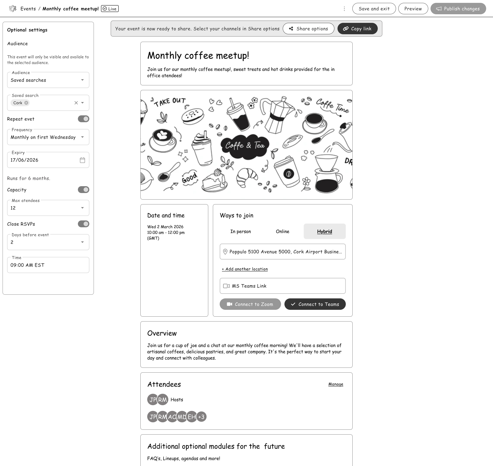

EcoTrack: Redefining Sustainable Shopping
A comprehensive mobile solution helping users track and reduce their carbon footprint through real-time purchase analysis and AI-driven sustainability scoring.
Role
Lead UI/UX Designer
Duration
3 Months (2023)
Tools
Figma, Adobe CC, Notion

Understanding the Challenge
The Problem
Users struggle to quantify the environmental impact of their daily shopping habits due to fragmented data and a lack of transparency in supply chains. Existing apps are too manual and time-consuming.

The Solution
An integrated API-driven dashboard that categorizes purchases and provides actionable sustainability scores instantly, using machine learning to recommend eco-friendly alternatives.

User Research & Insights
After interviewing 15 environmentally conscious shoppers, three key themes emerged that guided the entire design direction.
Convenience is King
85% of users stop tracking after 3 days if they have to manually input data. Automation was non-negotiable for retention.
Data Overload Paralysis
Users felt overwhelmed by raw CO2 numbers. They needed relative scores (e.g., "Good", "Average") to take action.
Community Motivation
Users were 2x more likely to stick to sustainable habits when they could see the collective impact of their social circle.
The Design Process
Visual Identity
Color Palette
#0D59F2
#101622
#10B981
#94A3B8
Typography
Inter Bold
Inter Medium
Aa Bb Cc Dd Ee Ff Gg Hh Ii Jj Kk Ll Mm Nn Oo Pp Qq Rr Ss Tt Uu Vv Ww Xx Yy Zz 1234567890

Seamless API Integration
We connected directly with major banking APIs to allow for automatic purchase categorization. Users don't need to manually enter data; the app learns their habits and provides real-time impact assessments as they spend.
- verified 99% accuracy in merchant categorization
- verified Secure OAuth 2.0 banking protocols
Smart Substitution Engine
Instead of just showing the damage, we focused on the solution. Our recommendation engine suggests local, sustainable alternatives for frequently purchased items, calculating exactly how much CO2 the user could save.

Results & Impact
4.8
App Store Rating
1.2M
CO2 Tons Saved
65%
User Retention
200k
Active Users
Next Project
Event builder module
